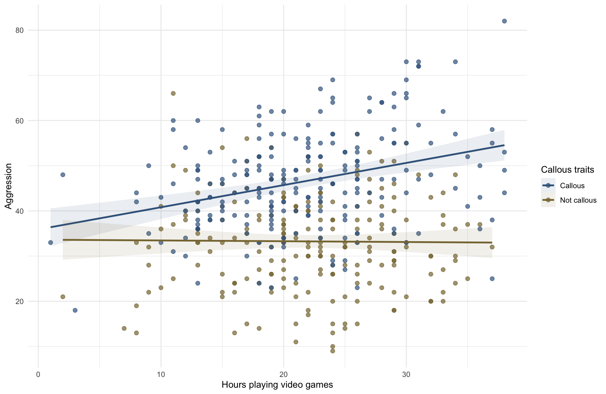
Factorial designs
Testing moderation using interactions
University of Sussex


|


Load and Look
| game | console | Mean | 95% CI (Mean) | SD | IQR | Range | n |
|---|---|---|---|---|---|---|---|
| Static | Xbox One | 7.00 | (5.65, 8.35) | 2.67 | 4.50 | (3.00, 11.00) | 10 |
| Active | Xbox One | 9.40 | (7.55, 11.10) | 3.37 | 5.75 | (4.00, 14.00) | 10 |
| Static | Switch | 6.70 | (5.65, 7.80) | 1.95 | 2.25 | (3.00, 10.00) | 10 |
| Active | Switch | 12.90 | (11.70, 14.35) | 2.51 | 4.00 | (10.00, 18.00) | 10 |

Visualize
ggplot(xbox_tib, aes(x = console, y = injury, colour = game, shape = game)) +
stat_summary(fun.data = "mean_cl_normal", geom = "pointrange", position = position_dodge(width = 0.2)) +
coord_cartesian(ylim = c(0,15)) +
scale_y_continuous(breaks = 0:15) +
scale_colour_viridis_d(begin = 0.3, end = 0.85) +
labs(x = "Type of console", y = "Injury severity (0-20)", colour = "Type of game", shape = "Type of game") +
theme_minimal()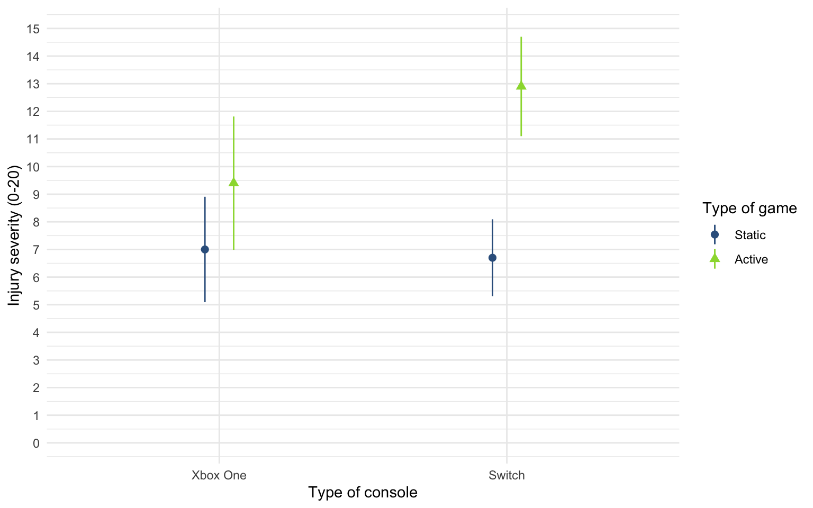

Evaluate assumptions

Interpret
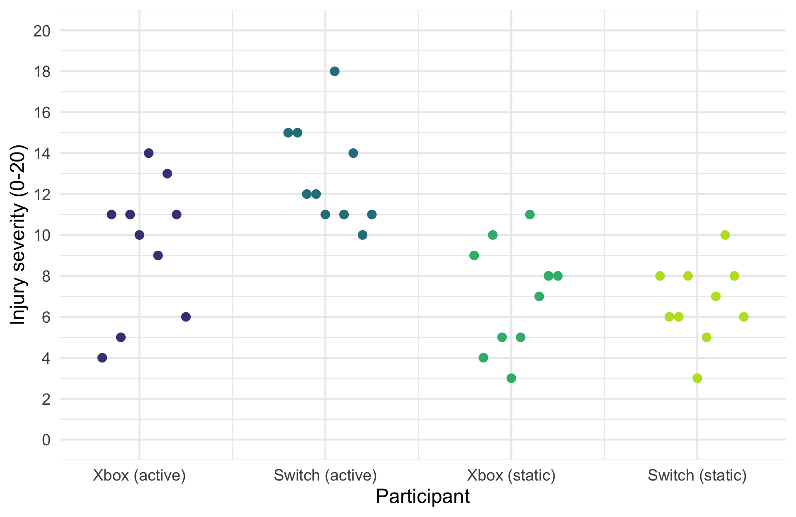

Interpret
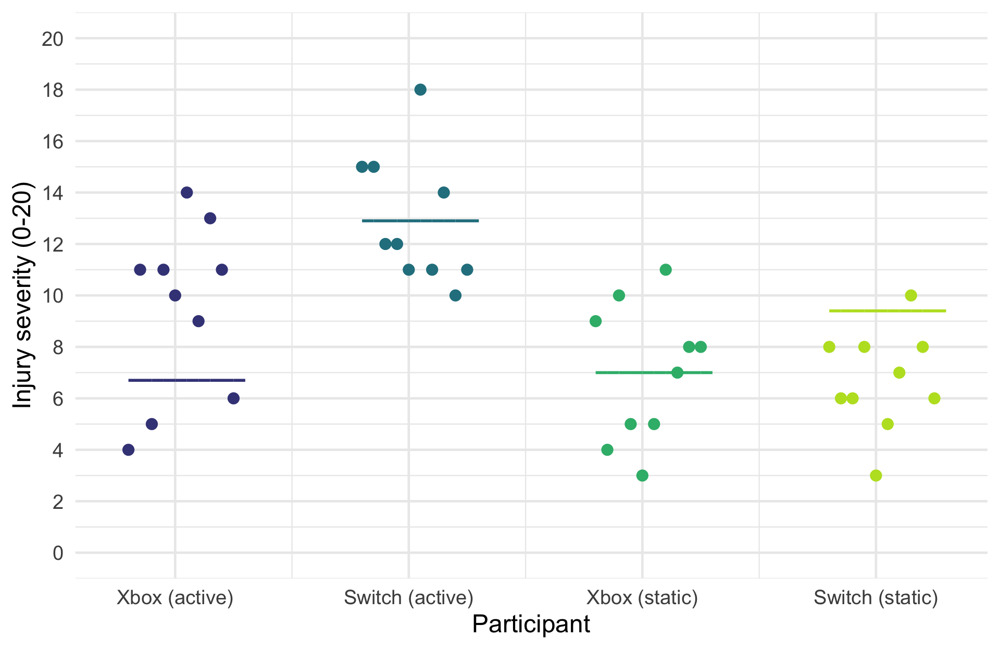
Interpret the main effect of console

Interpret the main effect of console
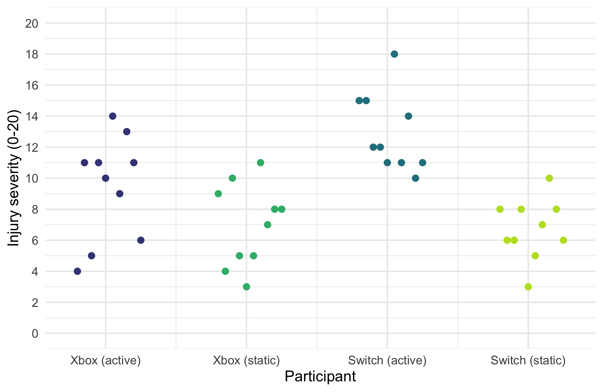
Interpret the main effect of console
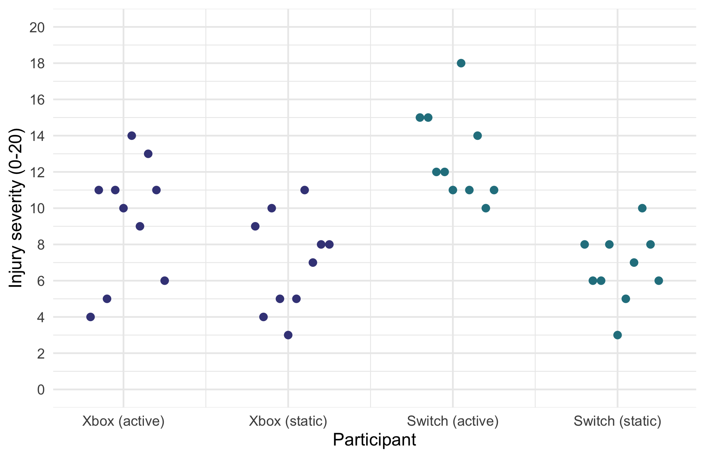
Interpret the main effect of console
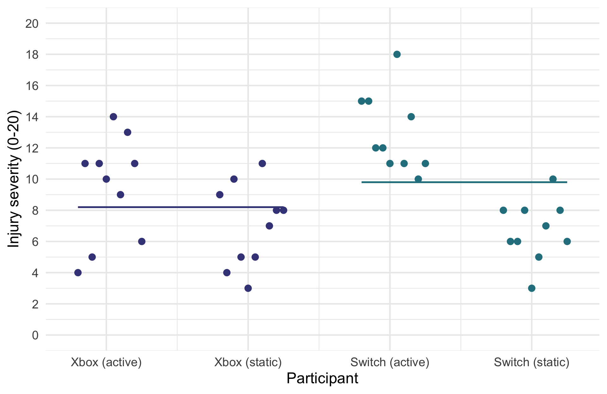
Interpret the main effect of game

Interpret the main effect of game
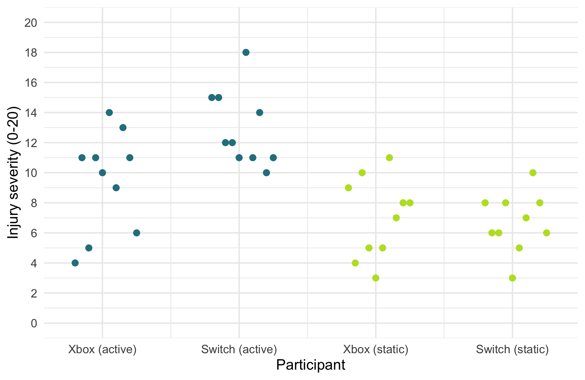
Interpret the main effect of game
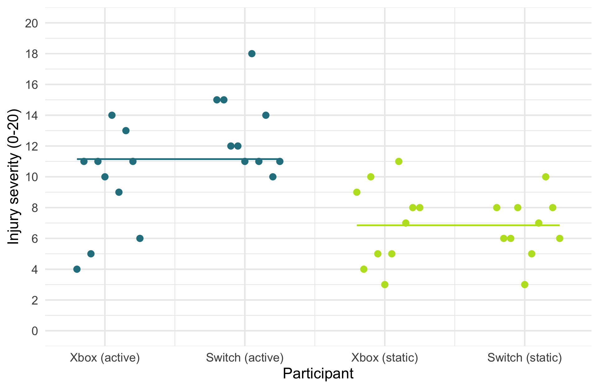
Interpret the interaction (moderation effect)
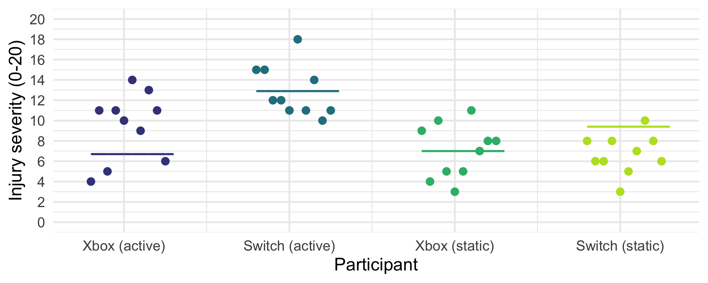
| Parameter | Sum_Squares | df | Mean_Square | F | p | ω² (partial) |
|---|---|---|---|---|---|---|
| game | 184.90 | 1 | 184.90 | 25.86 | < .001 | 0.38 |
| console | 25.60 | 1 | 25.60 | 3.58 | 0.067 | 0.06 |
| game:console | 36.10 | 1 | 36.10 | 5.05 | 0.031 | 0.09 |
| Residuals | 257.40 | 36 | 7.15 |
Interpreting interactions
Console moderating the effect of game
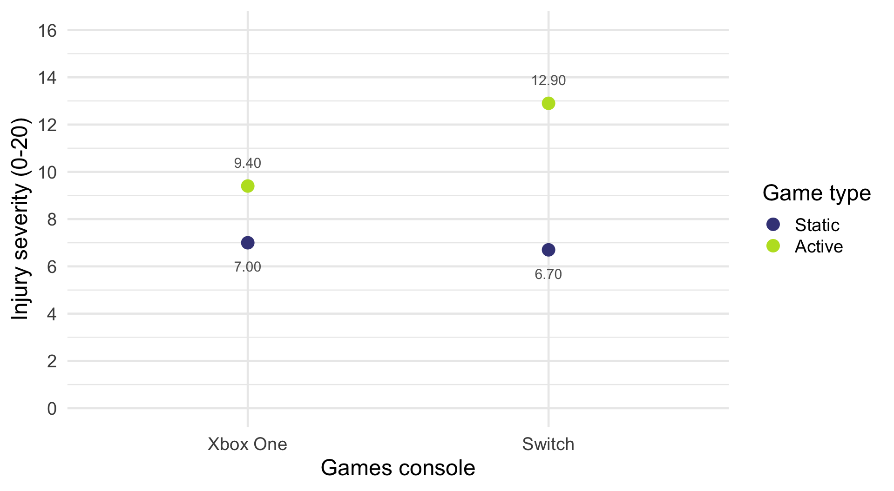
Interpreting interactions
Console moderating the effect of game
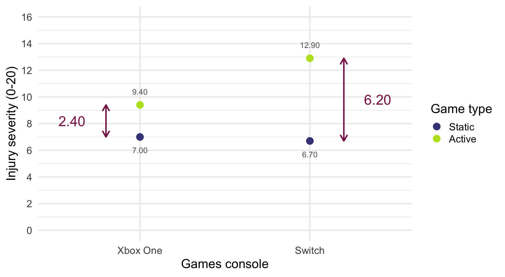
\[ \begin{aligned} \text{game}_\text{Switch} &= \bar{X}_\text{active, Switch}-\bar{X}_\text{static, Switch} \\ &= 12.90 - 6.70 \\ &= 6.20 \end{aligned} \]
\[ \begin{aligned} \text{game}_\text{Xbox} &= \bar{X}_\text{active, Xbox}-\bar{X}_\text{static, Xbox} \\ &= 9.40 - 7.00 \\ &= 2.40 \end{aligned} \]
\[ \begin{aligned} \text{Interaction} &= \text{game}_\text{Switch} - \text{game}_\text{Xbox} \\ &= 6.2 - 2.40 \\ &= 3.8 \end{aligned} \]
Interpreting interactions
Game moderating the effect of console
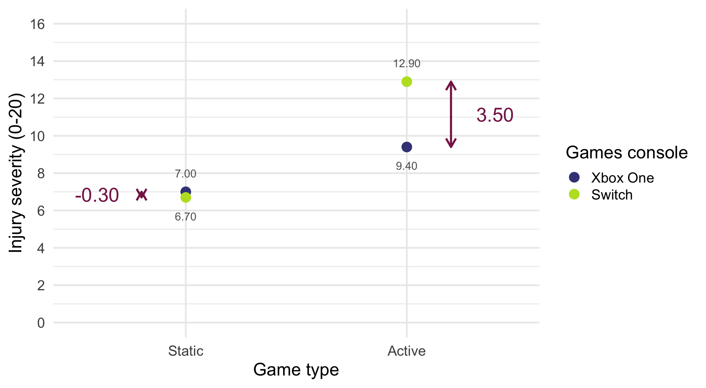
\[ \begin{aligned} \text{console}_\text{active} &= \bar{X}_\text{active, Switch}-\bar{X}_\text{active, Xbox} \\ &= 12.90 - 9.4 \\ &= 3.5 \end{aligned} \]
\[ \begin{aligned} \text{console}_\text{static} &= \bar{X}_\text{static, Switch}-\bar{X}_\text{static, Xbox} \\ &= 6.7 - 7.00 \\ &= -0.3 \end{aligned} \]
\[ \begin{aligned} \text{Interaction} &= \text{console}_\text{active} - \text{console}_\text{static} \\ &= 3.5 - (-0.3) \\ &= 3.8 \end{aligned} \]
Load and Look
| facetype | alcohol | Mean | 95% CI (Mean) | SD | IQR | Range | n |
|---|---|---|---|---|---|---|---|
| Unattractive | Placebo | 3.50 | (2.43, 4.62) | 1.60 | 2.50 | (1.00, 6.00) | 8 |
| Attractive | Placebo | 6.38 | (5.93, 6.94) | 0.92 | 1.00 | (5.00, 8.00) | 8 |
| Unattractive | Low dose | 4.88 | (4.18, 5.63) | 1.25 | 1.75 | (3.00, 7.00) | 8 |
| Attractive | Low dose | 6.50 | (6.00, 7.07) | 0.93 | 1.00 | (5.00, 8.00) | 8 |
| Unattractive | High dose | 6.62 | (6.00, 7.38) | 1.06 | 1.75 | (5.00, 8.00) | 8 |
| Attractive | High dose | 6.12 | (5.43, 6.94) | 1.13 | 2.00 | (5.00, 8.00) | 8 |
Visualize

Evaluate assumptions
Interpret simple effects
Simple effects: facetype within alcohol group

Interpret simple effects
Simple effects: facetype within alcohol group
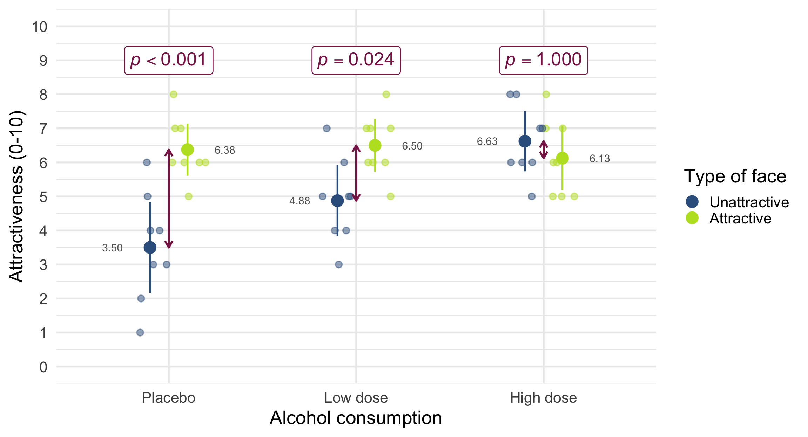
Interpret simple effects
Simple effects: alcohol within facetype
| Contrast | facetype | df1 | df2 | F | p |
|---|---|---|---|---|---|
| alcohol | Unattractive | 2 | 42 | 14.33 | < .001 |
| alcohol | Attractive | 2 | 42 | 0.21 | > .999 |
Predictors averaged: id; p-value adjustment method: Bonferroni
Interpret simple effects
Simple effects: alcohol within facetype
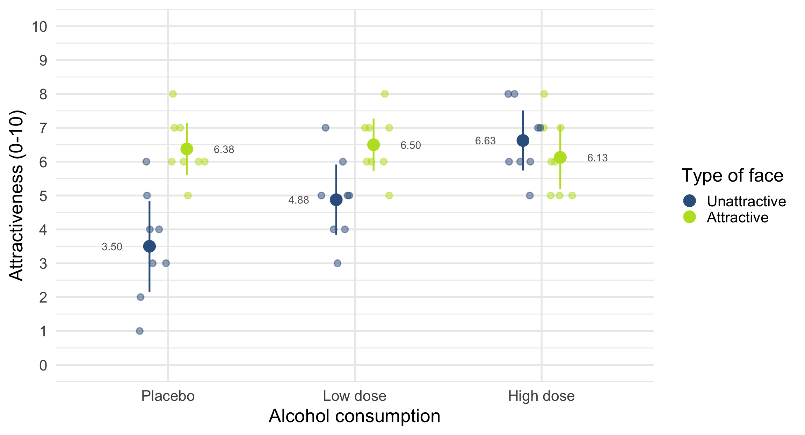
Interpret simple effects
Simple effects: alcohol within facetype
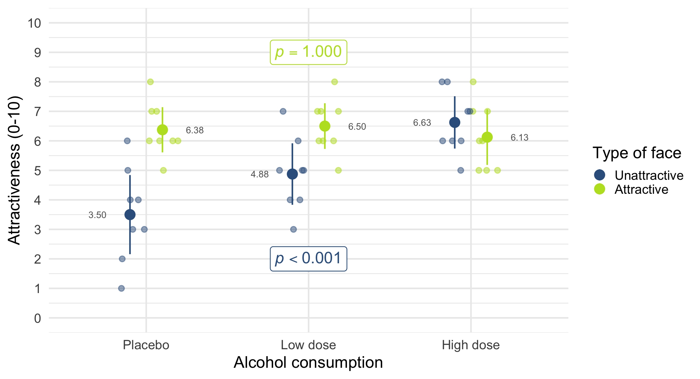